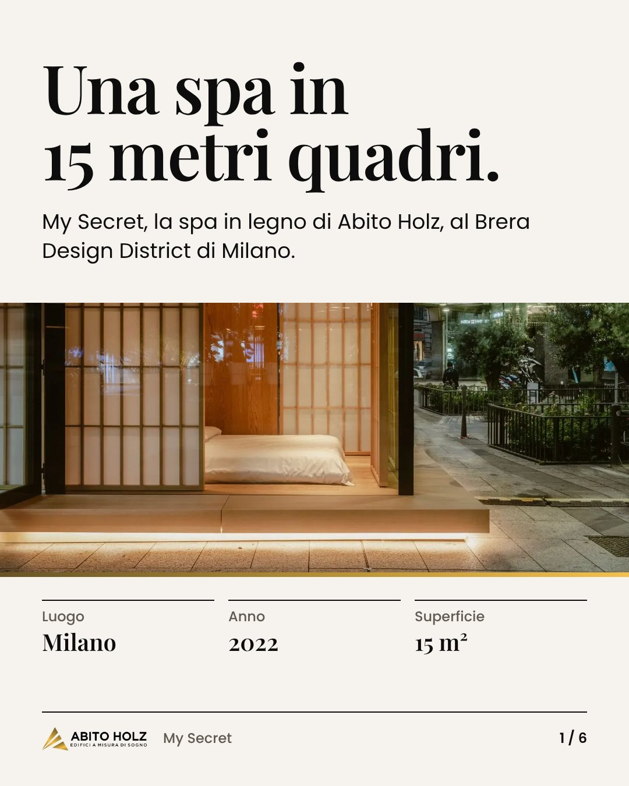
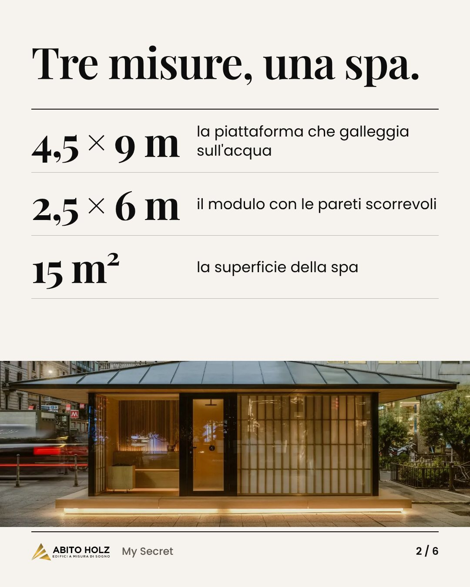
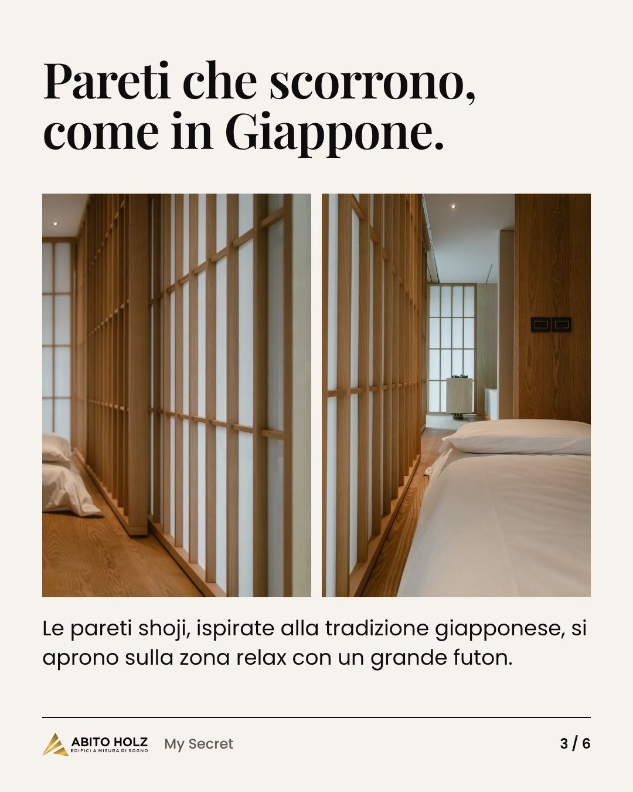
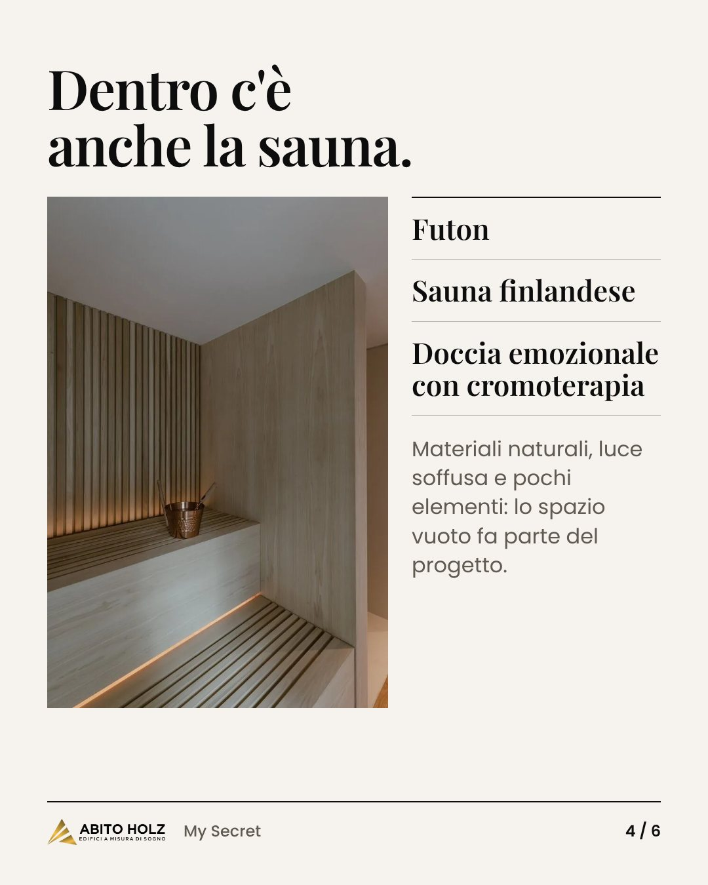
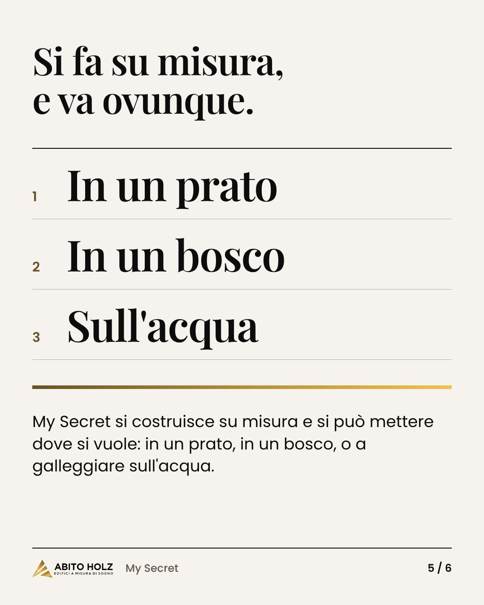
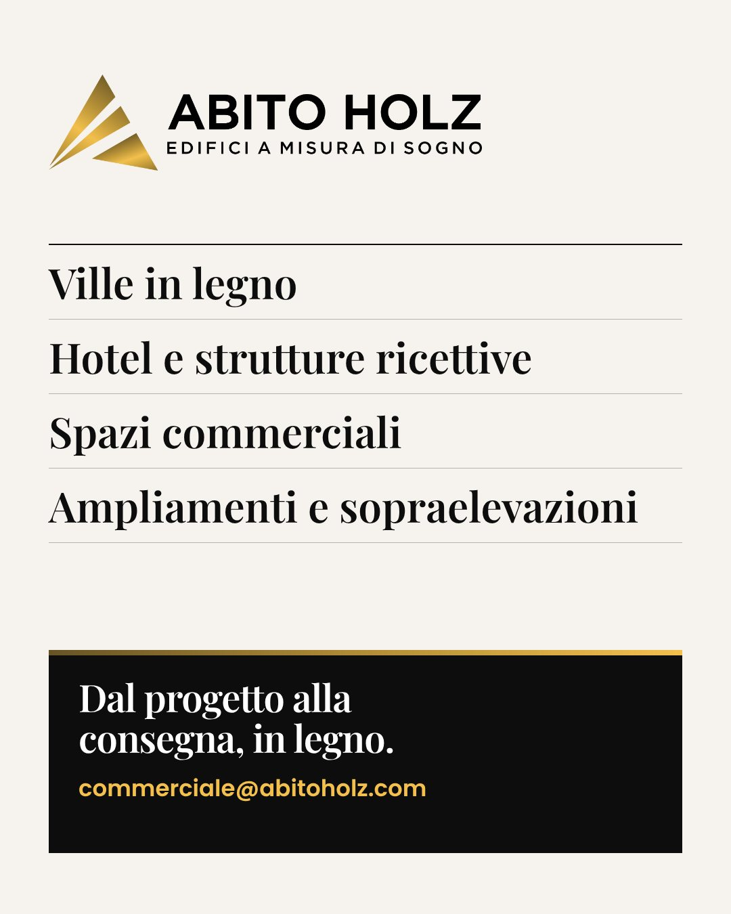

abitoholz1 / 6






abitoholz Una spa in 15 metri quadri, fatta su misura. My Secret: una piattaforma di 4,5 × 9 m pensata per galleggiare sull'acqua e un modulo di 2,5 × 6 m con le pareti scorrevoli shoji, ispirate alla tradizione giapponese. Dentro, un grande futon, la sauna finlandese e la doccia emozionale con cromoterapia. Si può mettere in un prato, in un bosco o sull'acqua. #edificiinlegno #spa #bioedilizia #trentino